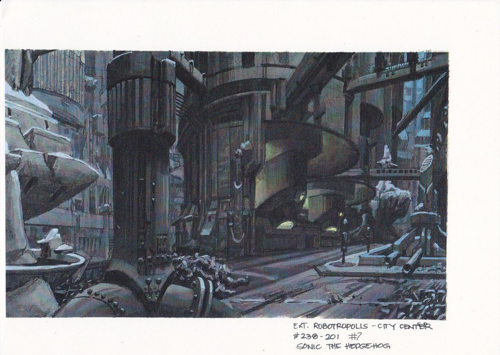
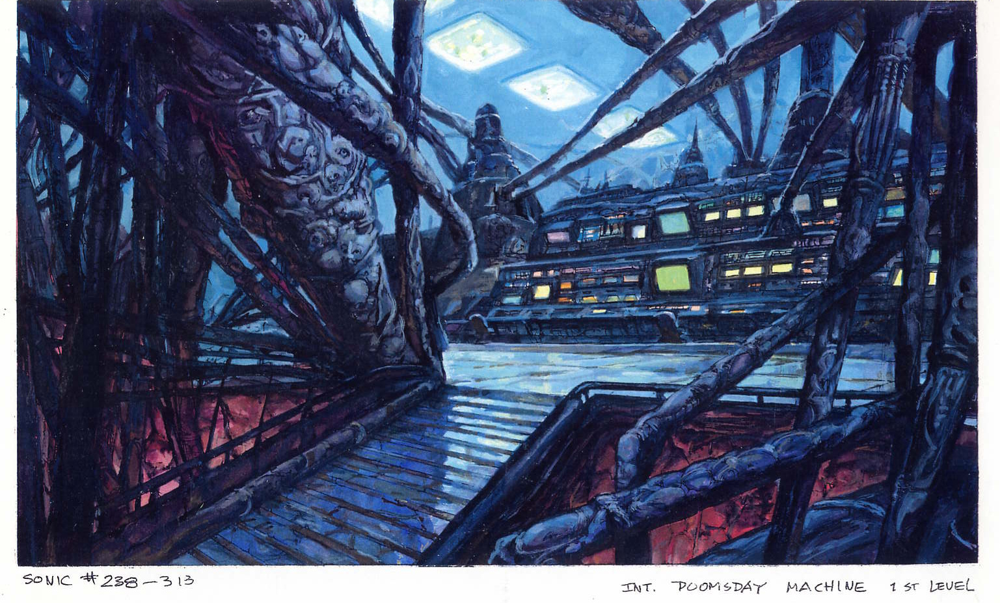

Sonic SatAM
Urkle sonic may be my least favourite sonic (though still iconic), but the environment art for robotropolis lives
rent free in my head. The overall vibe and tone of this show changed my life (the writing less so haha). I wish we
still got localizations of media that varied so much from the source material like this, it gives franchises so much more depth and creativity.


Images from SatamHistorian 's archive (check out their book!)
It's also worth reading through Archie Sonic if you enjoy gay furry melodrama (as I do).
Vocaloid
Call me basic, but I love Hatsune Miku. I love her color palette (the original silver and teal) and I love the idea of an AI vocalist from the
future. I love the fact that she's a blank slate you can repurpose to fill any role in any genre. I just think she
has an all around 10/10 character design.
My favourite producer is PinnochioP because he's also having a perpetual existential crisis.